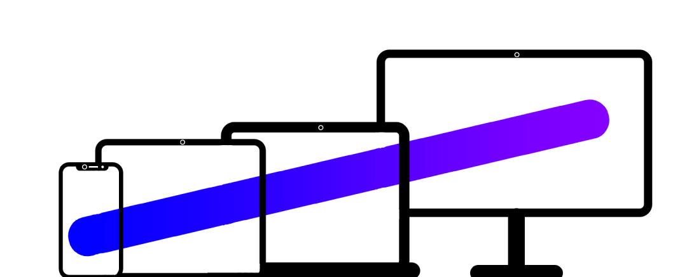

Orbs JS
Create beautiful 2D content for the web
1. Fluid
Fluid & smooth rendering, with Delta Time and variable FPS.
2. Robust
Robust API, with bunch of features.
3. Elegant
Elegantly designed to just work, no overhead setup, write less code and easy to learn.
4. Batteries Included
Every thing you need to make interactive content with scenes systems, input system, camera system and more...
5. Flexible
Multiplatform support and features to cater multiple needs
6. Free
And lastly Orbs JS is open source and free. And all ways be.
Amazing Feature Set
Multi Platform
Interactive content on desktop, mobile and beyond, all creatable with one library.
Easy API
Designed to be simple and easy to pick up. Developers will find them selves flying through development with its simple yet powerful API.
Interactivity
Easy interactive API to make interactive content with mouse events and more.
Images
Simple to use image system with caching and storage.
Rendering
Render using HTML5 Canvas to get more compatibility across browsers.
Scenes
Scenes that are not possible with vanilla canvas without big setups, is now available at your fingertips.
Scriptable
Write scripts for each object with component based scripting. Update their state on each frame with scripts.
Less Code
Less over head to setup, less code to write, yet more power.
Portability
Small in size, available on cdns and npm.
Powerful Rendering
A custom rendering engine (named Cave Engine, a proprietary engine) used to render, scripting, delta time, shaders (canvas filters) and camera movement.
Objects
Objects can be sprites, predefined shapes like: rectangles, circles; they can also be custom shapes defined by you (you can make curved lines) and lines.
Text
Use fully customizable text with font, size and colours.